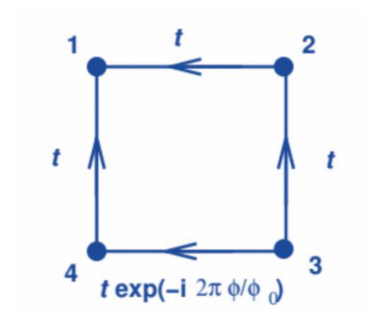
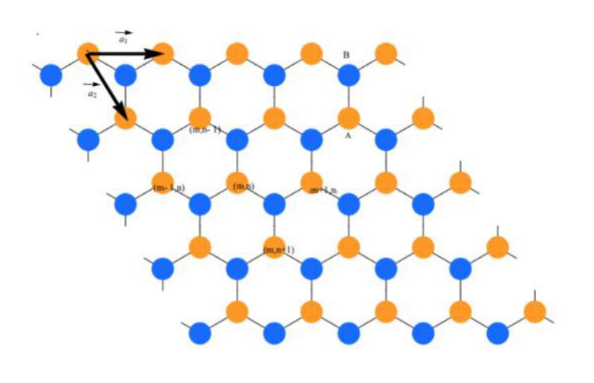

Tight-Binding
Introduction
The problem of the spectrum of an electron gas in a magnetic field is addressed by the minimal coupling prescription
\frac{\nabla_i}{i} \to \frac{\nabla_i}{i} - \frac{q}{\hbar}\mathbf{A}(\mathbf{r}) \tag{1}
where is the vector potential and the magnetic field is . It is not difficult to show that in two dimensions, for uniform normal to the electron gas, one has a discrete spectrum of Landau Levels,
\epsilon_n = \left(n + \frac{1}{2}\right)\hbar\omega_c, \qquad \omega_c = \frac{eB}{m} \tag{2}
where is the classical angular frequency of electron orbits. Furthermore, each level has a degeneracy (not counting spin) equal to the number of flux quanta in the sample, i.e. equal to where is the area and the flux quantum.
In the presence of a lattice potential this problem becomes considerably more complicated.
A tight binding (TB) model assumes a local basis, with one or more states in each lattice unit cell and is defined by two sets of parameters:
- local orbital energies: ;
- hopping amplitudes between local orbitals: .
The general state is defined by its amplitudes in this basis
|\psi\rangle = \sum_i c_i\,|\phi_i\rangle \tag{3}
and for a crystalline lattice, Bloch’s theorem can be used to solve for the Hamiltonian eigenstates.
The magnetic field is introduced by adding complex phases to the hopping amplitudes (Peierls substitution)
t_{ij} \to e^{i\phi_{ij}}\,t_{ij} \tag{4}
with the only requirement that the sum of phases along a loop is proportional to the magnetic flux in the area enclosed by the loop. The choice in Fig. 1 corresponds to a flux in the square of .

Figure 1 — With real this choice of phases describes motion in a magnetic field perpendicular to the plane with flux in the square of .
1. The square lattice
Assume a square lattice with sites with non-zero hopping amplitudes () only between nearest neighbors. Take and ( unit cells). You may take the site energy to be zero (band center).
-
1.1. [20 points] You can make a choice of phases to represent a uniform magnetic field affecting only bonds along , . Go ahead and do so. Notice that you break translational invariance only along direction. Use Bloch’s theorem along to reduce the Hamiltonian eigenvalue problem, for a given , to a 1D tight-binding chain with an on-site energy that varies along the chain and is periodic. Determine .
-
1.2. [15 points] In a realistic situation, the flux per unit cell, , is much smaller than the flux quantum. Confirm this by estimating for the value of such that . Show that the potential , for sensible values of , has a wavelength much greater than the lattice spacing . Obtain a continuum limit for your TB equation by assuming that the tight binding amplitudes vary slowly with the index and can be represented by a continuous function of computed at the site coordinate , which can be expanded in a power series. For a given , you obtain a Schrödinger equation in 1D (along ) for a particle in a potential .
-
1.3. [15 points] Look for a solution close to the minimum of the potential. Reduce the problem to that of an harmonic oscillator and try to prove the following:
- The low energy spectrum takes the form \epsilon_r = -4t + \left(r + \frac{1}{2}\right)\hbar\omega, \qquad r = 0, 1, 2, \dots \tag{5}
- if the potential period is larger than the width of the sample, each level has a degeneracy
- The form of the spectrum of Eq. 5 only holds for .
2. The Graphene Lattice
The case of the graphene lattice brings further complications. The honeycomb lattice is not a Bravais lattice and has two carbon atoms per unit cell (see Fig. 2). The general state is
where is a Bravais lattice site, and and are the two local orbitals in the unit cell . In a minimal model the site energies of all local orbitals is taken to be zero and a non-zero hopping amplitude, , () exists only between nearest neighbors. The magnetic field can be introduced with phases affecting only the bonds connecting orbitals with the same .

Figure 2 — Graphene lattice with basic lattice translations.
-
2.1. [20 points] Use Bloch’s Theorem to reduce the eigenvalue problem to a 1D chain with two types of atoms with a space dependent hopping . In graphene, the interesting energies are close to zero. To obtain these states consider the following suggestions.
-
2.2. [20 points] Use a phase change of the local orbitals to reduce the TB equation of the chain to the form
-
2.3. [10 points] You can obtain low energy states , with slowly varying wavefunctions in an atomic scale, near values of such that Expand the cosine term about , use a continuum approximation for the amplitudes as you did for the square lattice, and obtain equations in the form where the commutator is a c-number. Recall the commutation relation of harmonic oscillator operators, , and try to figure out the low energy spectrum from this.
Fonte: Testo (PDF) — p.9 Topic: Modern-Quantum Physics, Magnetism Metodi: Approximation & Series Expansion, Bohr Model & Quantization, Differential Equations, Superposition Principle Competenze: Mathematical Modeling, Physical Reasoning Objects: Electron
**Strice legame **
Introduzione
Il problema dello spettro di un gas elettronico in un campo magnetico è risolto con la prescrizione minima di accoppiamento
\frac{\nabla_i}{i} \to \frac{\nabla_i}{i} - \frac{q}{\hbar}\mathbf{A}(\mathbf{r}) \tag{1}
dove è il potenziale vettoriale e il campo magnetico è . Non è difficile dimostrare che in due dimensioni, per un uniforme normale al gas elettronico, si dispone di uno spettro discreto di livelli di Landau,
\epsilon_n = \left(n + \frac{1}{2}\right)\hbar\omega_c, \qquad \omega_c = \frac{eB}{m} \tag{2}
dove è la frequenza angolare classica delle orbite di elettroni. Inoltre, ogni livello ha una degenerazione (senza contazione dello spin) pari al numero di quantitati di flusso nel campione, ovvero: pari a , dove è l’area e il quantum di flusso.
In presenza di un potenziale di rete questo problema diventa considerevolmente più complicato.
Un modello di legame stretto (TB) assume una base locale, con uno o più stati in ogni cella di unità di rete e è definito da due set di parametri:
- energie orbitali locali: ;
- amplitudini di salto tra orbitali locali: .
Lo stato generale è definito dalle sue amplitudini in questa base
|\psi\rangle = \sum_i c_i\,|\phi_i\rangle \tag{3}
e per una griglia cristallina, il teorema di Bloch può essere usato per risolvere gli stati propri di Hamilton.
Il campo magnetico viene introdotto aggiungendo fasi complesse alle amplitudini di salto (sostituzione di Beierls)
t_{ij} \to e^{i\phi_{ij}}\,t_{ij} \tag{4}
con l’unico requisito che la somma delle fasi lungo un ciclo sia proporzionale al flusso magnetico nell’area chiusa dal ciclo. La scelta in Fig. 1 corrisponde a un flusso nel quadrato di .
Figura 1 Con reale questa scelta di fasi descrive il movimento in un campo magnetico perpendicolare al piano con flusso nel quadrato di .
1. La rete quadrata
Supponiamo una rete quadrata con siti con amplitudini di salto non zero () solo tra i vicini più vicini. Prendete e ( cellule unità). Si può prendere l’energia del sito a zero (centro di banda).
-
1.1. [20 punti] È possibile scegliere tra le fasi per rappresentare un campo magnetico uniforme che colpisce solo i legami lungo , . - Fa’ così. Si noti che si rompe l’invarianza traslazionale solo lungo la direzione . Utilizzare il teorema di Bloch lungo per ridurre il problema del valore proprio di Hamiltonian, per un dato , a una catena di stretta legame 1D con un’energia in loco che varia lungo la catena ed è periodica. Determina .
-
1.2. [15 punti] In una situazione realistica, il flusso per unità cellulare, , è molto inferiore al quantum di flusso. Confirmare questo calcolo calcolando per il valore di tale che . Mostrare che il potenziale , per i valori sensibili di , ha una lunghezza d’onda molto maggiore rispetto all’intervallo della rete . Ottieni un limite continuum per la tua equazione TB supponendo che le amplitudini di legame stretto variano lentamente con l’indice e possa essere rappresentata da una funzione continua di calcolata al coordinato del sito , che può essere ampliata in una serie di potenze. Per un dato , si ottiene un’equazione di Schrödinger in 1D (insieme ) per una particella in un potenziale .
-
1.3. [15 punti] Cercare una soluzione vicina al minimo potenziale. Riduci il problema a quello di un oscillatore armonico e prova a dimostrare quanto segue:
-
Lo spettro di bassa energia assume la forma \epsilon_r = -4t + \left(r + \frac{1}{2}\right)\hbar\omega, \qquad r = 0, 1, 2, \dots \tag{5}
-
se il periodo potenziale è maggiore della larghezza del campione, ogni livello presenta una degenerazione
-
La forma dello spettro di Eq. 5 si applica solo a .
2. Il graphene lattice
Il caso della rete di grafene porta ulteriori complicazioni. La rete di pelliccia non è una rete di Bravais e ha due atomi di carbonio per unità di cellula (vedi figura 1). 2). Lo stato generale è
dove è un sito della rete Bravais e e sono le due orbitali locali nella cella unità . In un modello minimo le energie del sito di tutti gli orbitali locali sono prese come zero e un’ampiezza di salto non zero, , () esiste solo tra i vicini più vicini. Il campo magnetico può essere introdotto con fasi che riguardano solo i legami che collegano gli orbitali con lo stesso .
Figura 2 Rete di graphene con traduzioni di base di rete.
-
2.1. [20 punti] Utilizzare il teorema di Bloch per ridurre il problema del valore proprio a una catena 1D con due tipi di atomi con un salto spaziale dipendente . Nel grafene, le energie interessanti sono vicine allo zero. Per ottenere questi stati si considerano i seguenti suggerimenti.
-
2.2. [20 punti] Utilizzare un cambiamento di fase degli orbitali locali per ridurre l’equazione TB della catena alla forma
-
2.3. [10 punti] Si possono ottenere stati a bassa energia , con funzioni d’onda che variano lentamente su scala atomica, vicini a valori di in modo tale che Espandi il termine cosino circa , usa un’approssimazione continuum per le amplitudini come hai fatto per la rete quadrata, e ottieni le equazioni nella forma in cui il commutatore è un numero c. Ricordate il rapporto di commutazione degli operatori di oscillatori armonici, , e provate a calcolare da questo lo spettro di bassa energia.
Fonte: Testo (PDF) — p.9 Topic: Modern-Quantum Physics, Magnetism Metodi: Approximation & Series Expansion, Bohr Model & Quantization, Differential Equations, Superposition Principle Competenze: Mathematical Modeling, Physical Reasoning Objects: Electron